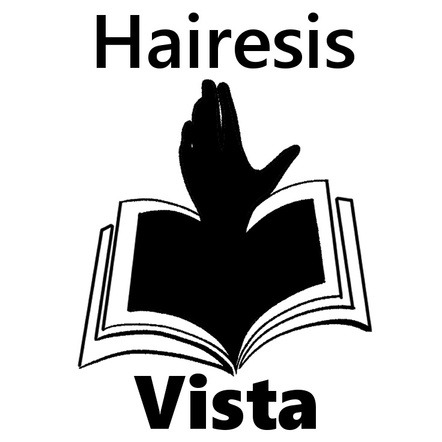

THE PROJECT
For a media literacy course, the assignment was to run a real persuasion campaign from start to finish, so the best way to understand how media shapes opinion is to try to do it yourself. I picked a deliberately provocative angle as my test case: arguing that people should not go to school.
To be clear, this was a study exercise, not a belief. I took the harder, more controversial side on purpose, because a topic where most of the evidence works against you is exactly where you have to lean on rhetoric and media strategy rather than facts. That made it a perfect lens for seeing those techniques at work.

THE STRATEGIES I STUDIED
The first weeks were analysis. I collected real articles, videos, and posts arguing both sides of the topic and broke down the persuasion techniques they used: bandwagon (careful phrases like "many people believe" to imply consensus), framing (presenting one option as neutral while quietly loading the other), testimonials and transfer (borrowing the credibility of studies or famous dropouts), and clickbait (impactful words like "success" and "career-connected" in the headline). Naming these in other people's content is what made them usable, and spottable, in my own.
BUILDING A BRAND
A campaign needs a voice, so I built one. HairesisVista (HVA) carries the tagline "Your Journey, Your Choice, Our Inspiration" and an informative but encouraging tone aimed at students weighing their options. I worked it through the usual brand tools: a SWOT (the obvious weakness being that most evidence runs against my chosen side), a competitor analysis against traditional education, and a brand identity covering purpose, essence, promise, and personality. The positioning was framed as offering another path rather than attacking education outright.
AUDIENCE & PERSONA
My target was secondary and high-school students who feel disengaged from school, plus parents weighing the decision for their kids. I built a user persona, refined it across several weeks, and mapped the audience's pains (employer bias toward degrees, social pressure, income uncertainty) and gains (flexible learning, practical career skills, freedom to explore). I also tracked their media habits, mostly YouTube tutorials and niche Reddit communities, so the content could meet them where they already were.
RUNNING THE CAMPAIGN
From there it became a live content campaign across Reddit, X (Twitter), and TikTok. I posted quotes, memes, informative posts, and a Q&A format, and planned reach using a paid, owned, and earned matrix plus interaction tactics like trend hashtags, multiple versions of a single idea, and small challenges. Reddit and X were useful for finding and understanding the audience, while TikTok was the channel I leaned on for actual reach.
RESULTS & REFLECTION
By the end, the TikTok content beat its reach goal (around 800 views against a target of 500) but fell short on the deeper engagement goals: likes, follows, and comments all came in under target. People watched far more than they interacted.
The honest takeaways: the content landed better than I expected once I found a simple, repeatable posting rhythm, but I spent too long early on Reddit and X when TikTok was where the exposure actually was, and I never cracked the engagement problem of getting viewers to comment or join the Q&A. The real win was the point of the course: I came out able to name and see the persuasion techniques in the media I consume every day, which is the whole reason to learn how the machine works from the inside.
HOW I MADE IT
The campaign ran week by week, from analysis to measurement:
- Week 1, analyse: collected real articles, videos, and posts on the topic and broke down the persuasion strategies they used (bandwagon, framing, testimonials, transfer, clickbait).
- Week 2, branding: built the HairesisVista brand with a SWOT, a competitor analysis, a positioning statement, and a first audience persona.
- Week 3, campaign story: refined the persona and the message, and decided on the content, genre, and strategy to run with.
- Week 4, media strategy: mapped the audience's behaviour and a paid, owned, and earned matrix, plus interaction tactics like trend hashtags and small challenges.
- Week 5, measure and evaluate: ran the content across TikTok, X, and Reddit, tracked the numbers against my goals, and reflected on what worked and what did not.